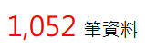
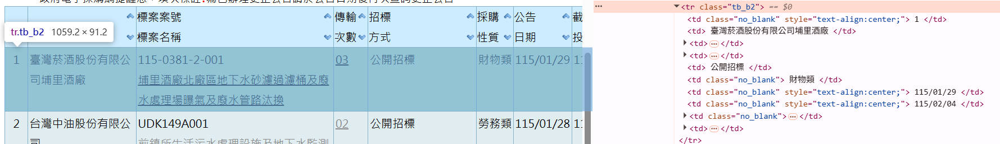
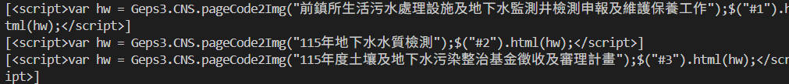

1. 參數化查詢：URL Builder
政府採購網本質上是用 Query String 控制搜尋條件， 所以我把所有搜尋條件（關鍵字、日期、標的分類）集中在一個 build_url 函式。
1 | def build_url(keyword: str, start_date: str, end_date: str) -> str: |
2. 模仿瀏覽器行為：Session
這是爬蟲能否維持連貫對話的關鍵。 我這邊是用 Session 來做兩件事：
自動保存 Cookie（包含 Session ID）
模擬瀏覽器的連續操作行為
使用 requests.Session() 發送請求時，伺服器回傳的 Session ID 會被自動儲存在內部的 Cookie 中。當我們接續發送 session.get() 或 session.post() 時，程式會自動帶出相同的 Session ID。若不使用 Session 物件，伺服器會將每次請求視為互相獨立的個體，導致無法正確讀取分頁或維持登入狀態。
1 | s = requests.Session() |
3.定位目標數據 : BeautifulSoup

在解析 HTML 的時候，我沒有一開始就直接抓資料列。先透過 BeautifulSoup 先抓取總筆數作為驗證

接著精確鎖定特定的 CSS Class（如 .tb_b2,
.tb_b3），只解析真正的數據列，排除表頭與雜訊。 1
2
3
4
5
6
7
8
9def parse_rows(soup: BeautifulSoup):
# 定位目標表格
table = soup.find("table", class_="tb_01")
for tr in table.find_all("tr"):
cls = tr.get("class") or []
if "tb_b2" in cls or "tb_b3" in cls:
# 提取邏輯...
4. JavaScript 封裝字串的還原
政府採購網的「標案名稱」並非直接寫在 HTML 中， 而是被包在 JavaScript 函數內，例如：

1 | Geps3.CNS.pageCode2Img("encoded_string"); |
直接把 script 當成純文字處理：
所以用字串切割把編碼內容取出來
再用 html.unescape 還原成可讀文字
1 | def decode_pageCode2Img(raw_html: str, span_id: str) -> str: |
5. DeBug
查詢失敗 → 檢查 URL Builder
抓不到資料 → 檢查 Session
欄位亂掉 → 檢查 parser
名稱空白 → 檢查 JS decode